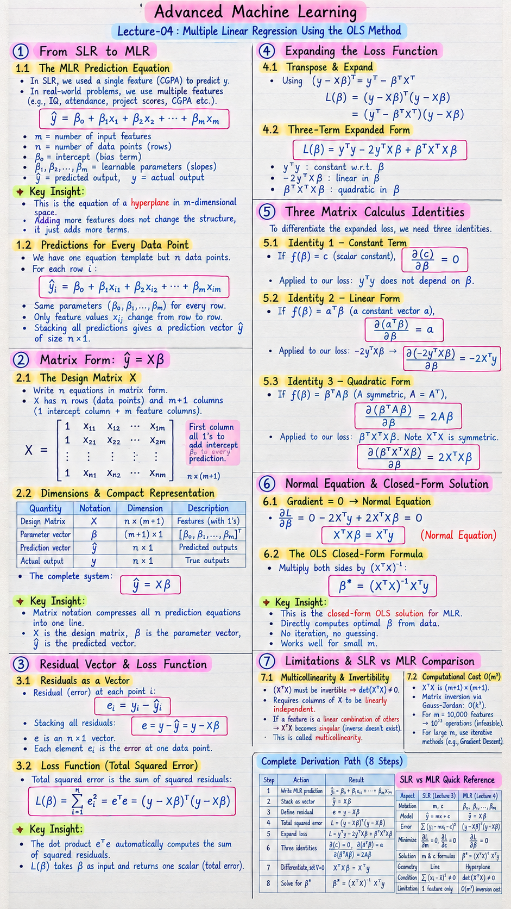

Short Notes & Visual Summary
Handwritten / quick summary notes for Lecture 04:

Click image to open high-resolution version in new tab
From SLR to MLR
1.1 The MLR Prediction Equation
In Lecture 3, a single feature (CGPA) predicted the output. But real-world predictions often require multiple features — e.g., IQ, attendance, project scores, and CGPA all together.
The Multiple Linear Regression (MLR) model with m features is:
- m = number of input features
- n = number of data points (rows)
- β₀ = intercept (bias term)
- β₁ … βₘ = learnable slope parameters (one per feature)
- ŷ = predicted output; y = actual output
✨ Key Insight: This is the equation of a hyperplane in m-dimensional space. Adding more features doesn't change the structure — it just adds more terms.
1.2 Predictions for Every Data Point
We have one equation template but n data points. For each row i:
The same parameters (β₀, β₁, …, βₘ) are used for every row — only the feature values xᵢⱼ change row to row. Stacking all predictions gives a prediction vector ŷ of size n×1.
Matrix Form: ŷ = Xβ
2.1 The Design Matrix X
Writing n separate equations is tedious. We pack all of them into one compact matrix equation. The key component is the Design Matrix X:
- It has n rows (one per data point) and m+1 columns (one intercept column of all 1s, plus m feature columns).
- The first column is all 1s so that multiplying by β₀ automatically adds the intercept to every prediction.
2.2 Dimensions & Compact Representation
Dimension summary:
- X (design matrix):
n × (m+1) - β (parameter vector):
(m+1) × 1 - ŷ (prediction vector):
n × 1
The entire system of n prediction equations collapses to one line:
✨ Key Insight: Matrix notation compresses all n prediction equations into one line. X is the design matrix, β is the parameter vector, ŷ is the predicted vector.
Residual Vector & Loss Function
3.1 Residuals as a Vector
The residual (error) at each point i is:
Stacking all residuals into a single vector:
This is an n×1 vector where each element is the error at one data point.
3.2 Loss L(β) = eᵀe
The total squared error is the sum of all squared residuals:
✨ Key Insight: The dot product eᵀe automatically computes the sum of squared residuals — one matrix operation replaces the entire summation. L(β) takes the parameter vector β as input and returns one scalar (total squared error) as output.
Expanding the Loss Function
4.1 Transpose & Expand
The compact form L(β) = (y − Xβ)ᵀ(y − Xβ) is hard to differentiate directly. We expand it term by term using the transpose of a difference: (y − Xβ)ᵀ = yᵀ − βᵀXᵀ.
4.2 Three-Term Expanded Form
After expansion, the two middle cross-terms yᵀXβ and βᵀXᵀy are both scalars and equal (transpose of a scalar = itself), so they combine to −2yᵀXβ:
Each term has a role:
- yᵀy — constant w.r.t. β (independent of our parameters)
- −2yᵀXβ — linear in β
- βᵀXᵀXβ — quadratic in β
✨ Key Insight: This loss is a convex function of β — it has a unique global minimum, guaranteed. L maps a vector to a scalar: L : ℝᵐ⁺¹ → ℝ.
Three Matrix Calculus Identities
To differentiate the expanded loss, we need three identities — one for each type of term.
5.1 Identity 1 — Constant Term
If f(β) = c (a scalar constant, independent of β), then:
Applied to our loss: yᵀy does not depend on β, so its derivative is the zero vector.
5.2 Identity 2 — Linear Form
If f(β) = aᵀβ (a dot product of a constant vector a with β), differentiating each component gives back aᵢ:
Applied to our loss: the linear term is −2yᵀXβ. Here a = −2Xᵀy, so:
5.3 Identity 3 — Quadratic Form
If f(β) = βᵀAβ where A is a constant symmetric matrix (A = Aᵀ), this is the matrix analogue of ax². Just as d(ax²)/dx = 2ax:
Applied to our loss: the quadratic term is βᵀXᵀXβ. Note that XᵀX is symmetric: (XᵀX)ᵀ = XᵀX ✓. So A = XᵀX and:
Normal Equation & Closed-Form Solution
6.1 Gradient = 0 → Normal Equation
Applying the three identities to L(β) = yᵀy − 2yᵀXβ + βᵀXᵀXβ and assembling the gradient:
Setting to zero and rearranging:
This is one compact matrix equation that encodes all m+1 optimality conditions simultaneously.
6.2 The OLS Closed-Form Formula
Multiply both sides of the Normal Equation by (XᵀX)⁻¹:
✨ Key Insight: This is the closed-form OLS solution for MLR. It directly computes the optimal β from data — no iteration, no guessing. Steps: compute XᵀX → invert it → multiply by Xᵀy.
The complete 8-step derivation path:
| Step | Action | Result |
|---|---|---|
| 1 | Write MLR prediction | ŷᵢ = β₀ + β₁xᵢ₁ + ··· + βₘxᵢₘ |
| 2 | Stack as vector | ŷ = Xβ |
| 3 | Define residual | eᵢ = yᵢ − ŷᵢ |
| 4 | Total squared error | L = eᵀe = (y − Xβ)ᵀ(y − Xβ) |
| 5 | Expand loss | L = yᵀy − 2yᵀXβ + βᵀXᵀXβ |
| 6 | Three identities | ∂(c)/∂β=0 | ∂(aᵀβ)/∂β=a | ∂(βᵀAβ)/∂β=2Aβ |
| 7 | Differentiate, set ∇=0 | XᵀXβ = Xᵀy (Normal Equation) |
| 8 | Solve for β* | β* = (XᵀX)⁻¹ Xᵀy |
Limitations & SLR vs MLR Comparison
7.1 Multicollinearity & Invertibility
For β* = (XᵀX)⁻¹Xᵀy to work, the matrix (XᵀX) must be invertible, i.e., det(XᵀX) ≠ 0. This requires the columns of X to be linearly independent.
⚠️ Multicollinearity: If any column of X is a linear combination of other columns (e.g., a feature = sum of two other features), then XᵀX becomes singular — the inverse doesn't exist and the closed-form OLS solution breaks down completely.
7.2 Computational Cost O(m³)
Even when the inverse exists, computing it is expensive. The matrix XᵀX has dimensions (m+1)×(m+1). Inverting a k×k matrix via Gauss-Jordan elimination uses three nested loops:
- Outer loop: k pivot columns
- Middle loop: k rows to eliminate per pivot
- Inner loop: ~2k elements per row (augmented matrix)
Example: with m = 10,000 features, cost = 10,000³ = 10¹² operations — one trillion! This is computationally infeasible.
✨ Key Insight: Closed-form OLS works well for small m. For large m (many features), use iterative methods like Gradient Descent (next lecture).
SLR vs MLR Quick Reference
| Aspect | SLR (Lecture 3) | MLR (Lecture 4) |
|---|---|---|
| Notation | m, c | β₀, β₁, …, βₘ |
| Model | ŷ = mx + c | ŷ = Xβ |
| Error | Σ(yᵢ − mxᵢ − c)² | (y − Xβ)ᵀ(y − Xβ) |
| Minimize | ∂L/∂m = 0, ∂L/∂c = 0 | ∂L/∂β = 0 |
| Solution | m & c formulas | β* = (XᵀX)⁻¹Xᵀy |
| Geometry | Line | Hyperplane |
| Condition | Σ(xᵢ − x̄)² ≠ 0 | det(XᵀX) ≠ 0 |
| Limitation | 1 feature only | O(m³) inversion cost |
Original PDF Notes
Below is the original worksheet PDF for reference: